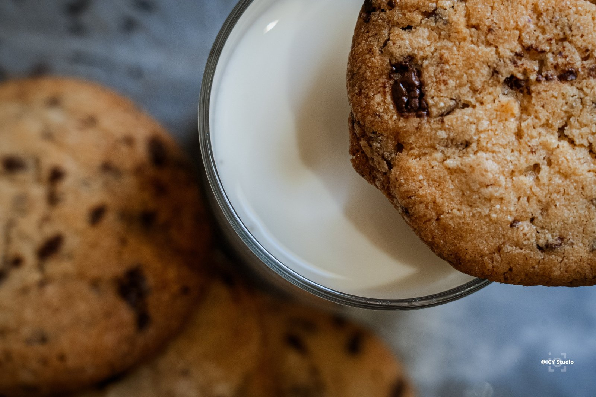
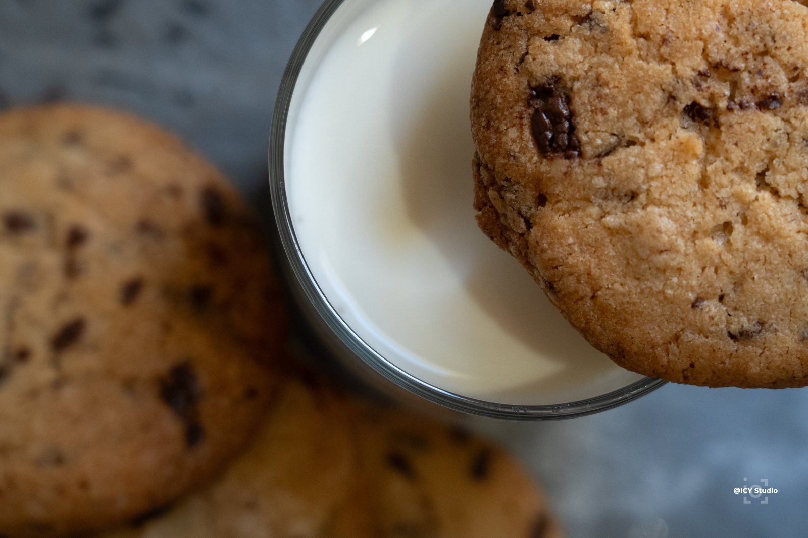
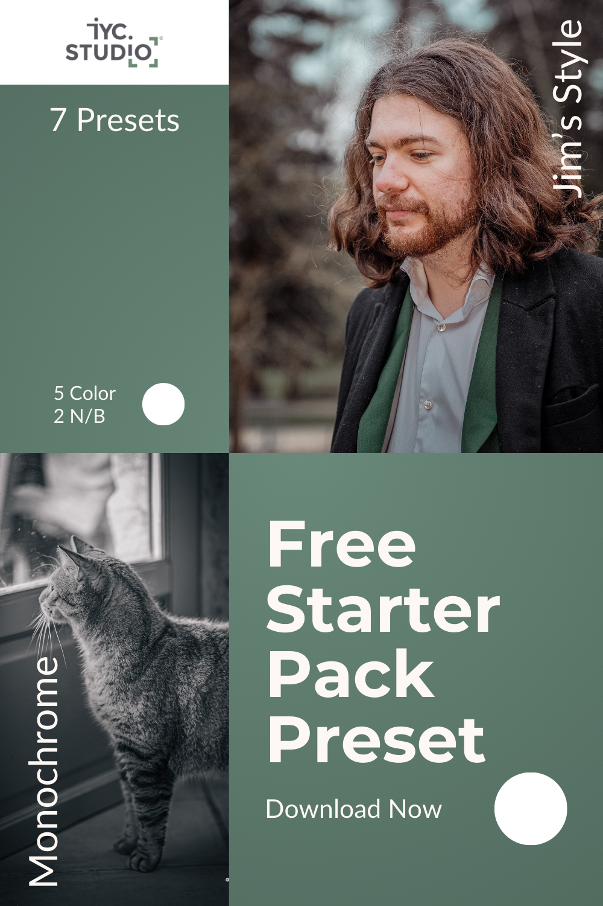

Have you ever spent hours editing photos after a session, adjusting every setting until you were satisfied?
Picture this: you are in the middle of a shoot, capturing precious moments, but when you get home and start editing you are overwhelmed by the adjustments left to make. That is where presets come in. These small tools can change your workflow and free your creativity.
But... what is a preset?


A preset is a saved set of editing settings you can apply to your photos in a single click. They save time and keep a consistent style across your images.
Whether you use Adobe Lightroom, Photoshop or another editing program, presets have become essential for many photographers. In the example above, my culinary preset brings out the crisp edge of the cookie and makes it slightly more vivid and bright.
My story with presets
One day, on a particularly full shoot, I applied a preset I had built for similar light. In a moment the photos came alive, and I could deliver the images to my client much faster than planned.
When I started in photography, I was often frustrated by how long each photo took to edit. I wanted to speed that up without giving up quality. That is when I discovered presets. They let me focus on shooting and spend less time in front of the screen.
How to install and use presets, and why they help
Applying them
- Choose a photo:
- Import a photo into Lightroom and switch to the Develop module.
- Apply the preset:
- In the right-hand panel, scroll to Presets.
- Click the preset you want. You will see the changes on the photo immediately. For black-and-white presets, check that Black & White is enabled in Lightroom.
- Make it yours:
- After applying the preset, you can still adjust individual settings (exposure, contrast or white balance) until the result feels right.
- Presets are a starting point. Adapt them until you get the picture you want.
Installing them
- Download:
- Start by downloading the compressed file (often a .zip) that contains the presets.
- Unzip:
- Once it has downloaded, unzip it to reach the preset files. You can use the tools built into your system, or a program such as WinRAR or 7-Zip.
- Open Lightroom:
- Launch Adobe Lightroom on your computer.
- Open the Develop module:
- Switch to Develop by clicking the matching icon in the top-right of the Lightroom window.
- Import the presets:
- In the right-hand panel, find Presets.
- Click the + sign and choose Import to add new presets.
- Go to the folder where you unzipped the presets, select them, and click Import.
- Restart Lightroom:
- You may need to restart Lightroom before the new presets appear in the list.
The advantages
- Time: applying a preset is much faster than adjusting every setting by hand.
- Consistency: using the same presets across a series keeps the final look even.
- Creativity: presets let you try different styles and moods without the effort.
Special offer: download my free preset
To thank you for reading, and to help you start with presets, I am giving away one of my favorite presets for free.
Fill in the form here to get your free preset.

Sign up to my newsletter with the link below, and the preset will arrive in your inbox.
Note: this preset gives a consistent base, but every photo is unique and may still need adjustments.
Conclusion: make retouching easier
Presets are more than an editing shortcut. They open a more efficient, more creative way of working. Once they are part of your workflow, you can focus on what matters: capturing unique moments and telling stories with your photos.
- Stay in touch: subscribe to my newsletter for more advice and exclusive offers.